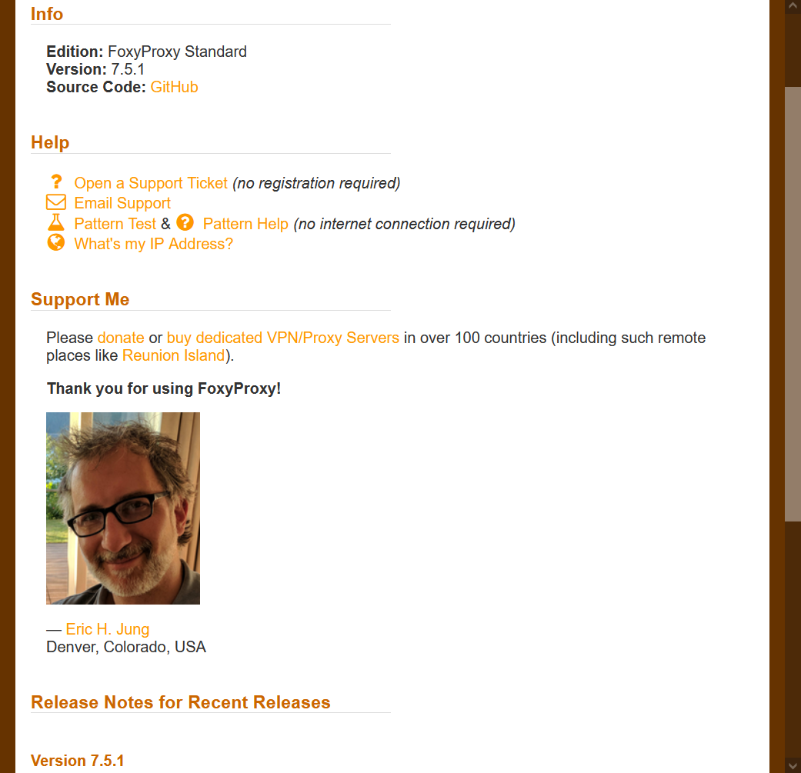
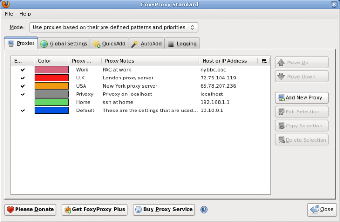
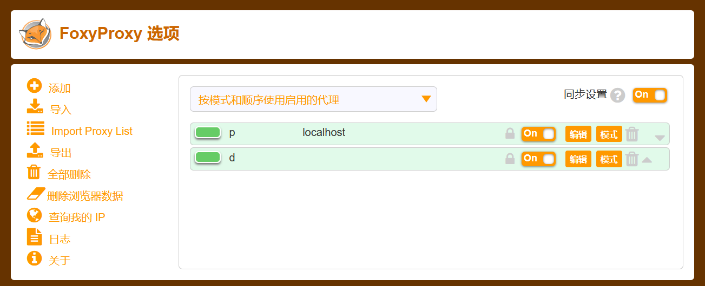
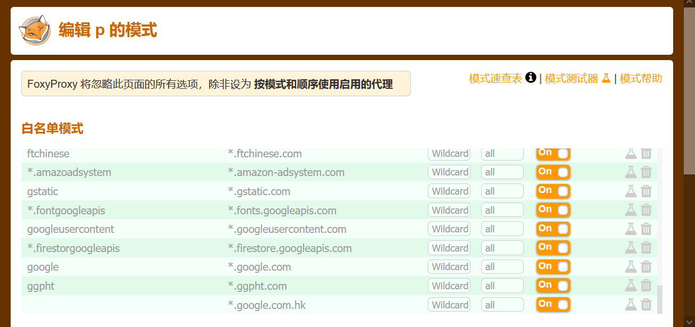
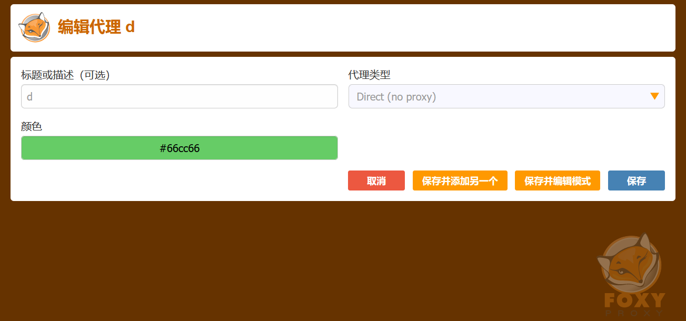
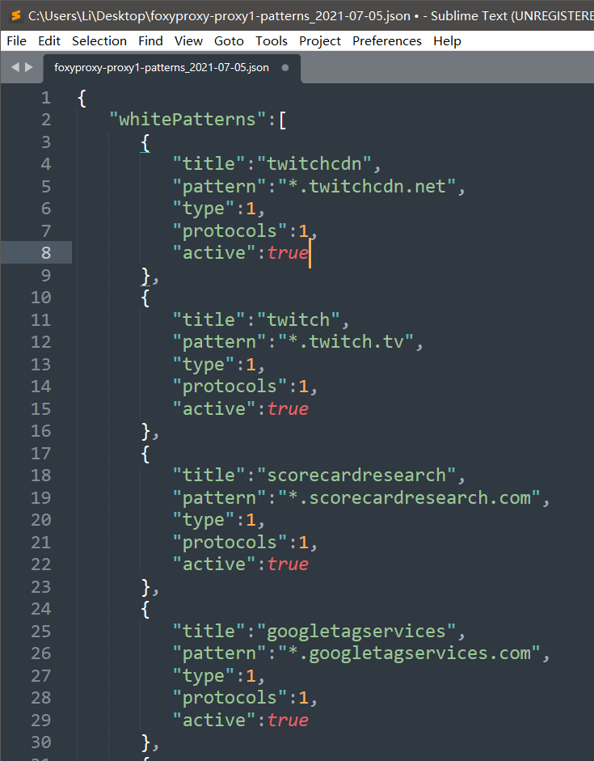
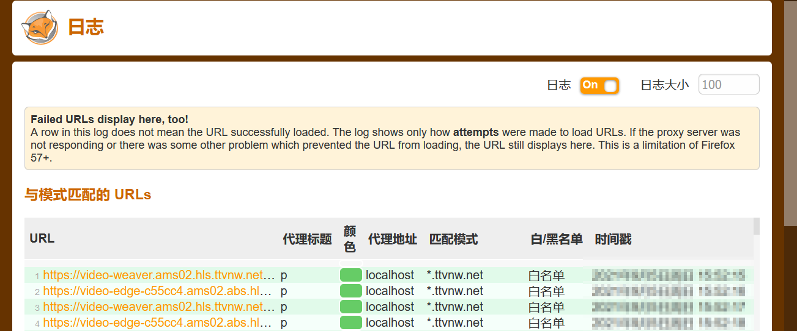
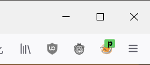

好久没有用foxyproxy了，版本已经到7了。

和版本4相比，界面完全不一样，感觉已经不会用这个软件了。

探索了一阵后，弄明白了软件的工作逻辑。

当设置为“按模式和顺序”使用代理时，开始从上倒下匹配。当触发到匹配的条件后，执行相应的代理。
如图中的“p”模式

如果没有在这个条目中匹配，会查找下一个模式，如果没有下一个模式，就会使用当前模式代理，所以需要一个不使用代理的白名单。
如图中的“d”模式

为了快速创建黑白名单，可以使用导入导出，然后使用文本编辑器编辑Json文件。Json文件格式如下图。

可以通过日志检查创建的模式是否正确的匹配。

在浏览器运行时，foxyproxy的图标会展示当前正在使用的模式。
